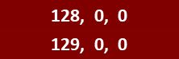

An Investigation using Gridfour for Image Processing, Storge, and Data Compression
The Gridfour Virtual Raster Store (GVRS) helps Java applications manage raster (grid) products in situations where the size of the data exceeds what could reasonably be kept in memory. It also provides a file-based API for the persistent storage of data between application sessions.
Ordinarily, GVRS focuses on numerical and geophysical information. Of course, there is another kind of raster data that a lot of people care about: images.
Recently, I used the GVRS API to support work on a project that involved aerial photographs taken at high resolution over an area in central Pennsylvania. The photographs were stored as images with sizes in the 100 megapixel range. Rather than keeping an entire image in memory, I took advantage of the GVRS virtual raster storage capabilities. Using GVRS, I was able to perform runtime image processing on hefty images without consuming excessive memory.
The aerial photograph project required a bit of improvisation. The GVRS API does not provide direct support for image formats. I was able to accomplish what I needed to do by treating pixels as simple integers. While this solution was not ideal, it produced satisfactory results. This article will describe some of the techniques I used and provide background on a few concepts from image processing.
One of the other goals of the Gridfour Software Project is to explore techniques for lossless data compression. So having identified GVRS as a viable tool for supporting image processing, I thought it would be interesting to see how well GVRS would do performing data compression on image data products. The results and some sample code are provided below I also discuss some of the algorithmic considerations involved in using GVRS to compress image data.
Note: Discussions of the GVRS data compression techniques are available at The Gridfour Application Notes page. The source code for the application used for this article is available at the Gridfour Software Project in the file ExperimentalImageStorage.java.
The figure below shows a down-sampled version of the source image I used
for the test described in this article. To fit on this page, the original 10000-by-10000 pixel image was reduced
by a factor of 15-to-1. The pixel spacing in the original image scale was 1 foot (0.3 meter) per pixel.
The paved area and structures at the lower-left corner of the image belong to University Park Airport
near The Pennsylvania State University. The source data was stored in a geo-referenced TIFF image
(e.g. a "GeoTIFF") and included metadata that would allow it to be displayed on map-based applications.
One of the most common ways to represent pixels is to store them as a four-byte integer. And because the GVRS API implements an integer data format, it seems a natural for storing pixel values. The example code that follows uses the Apache Commons Imaging library to load data from the source image and then stores it in a GVRS file. Once the data is transcribed to a GVRS file, it is available for access in whatever application code or image-processing implementations are desired. Although the code example omits the image-processing logic, it illustrates how to set up a virtual raster data store for custom processing.
If you would like a more detailed explanation of how to use the GVRS API, see the GVRS Jump Start Guide
// Load the image and obtain its dimensions
File input = new File("26001940pan.tif");
BufferedImage bImage = Imaging.getBufferedImage(input);
int width = bImage.getWidth();
int height = bImage.getHeight();
int nPixels = width * height;
int nRows = height; // GVRS API uses row, column as grid coordinates
int nCols = width;
// Use the standard Java API to get the pixel values from the image
// and store it in an integer array
int[] argb = new int[width * height];
bImage.getRGB(0, 0, width, height, argb, 0, width);
// Create a GVRS file and transcribe the image data to the GvrsFile.
// Here we do not specify a specific file for output, so the GVRS API
// creates a temporary file which will be discarded when it is closed.
// We specify a four-byte integer element named "pixel" for storing
// pixel data, and then transcribe values from the input file into
// the GVRS file store.
GvrsFileSpecification fSpec = new GvrsFileSpecification(nRows, nCols);
GvrsElementSpecification pSpec = new GvrsElementSpecificationInt("pixel");
fSpec.addElementSpecification(pSpec);
// Access the GVRS file in a Java try-with-resources block
try (GvrsFile gvrs = new GvrsFile(fSpec)) {
gvrs.setTileCacheSize(GvrsCacheSize.Large);
GvrsElement pixel = gvrs.getElement("pixel");
for (int iRow = 0; iRow < nRows; iRow++) {
for (int iCol = 0; iCol < nCols; iCol++) {
int index = iRow * nCols + iCol;
pixel.writeValueInt(iRow, iCol, argb[index]);
}
}
// At this point, the image is now stored in the virtual raster data store
// and can be used for subsequent processing.
// IMAGE PROCESSING CODE OMITTED.
}catch(IOException){}
The GVRS virtual raster stores data in a backing file. The example above used a temporary file that was deleted when the code exited the try-with-resources block. If an application needed to preserve that file from run-to-run, it could have done so by specifying an explicit file reference.
Of course, storing a 100 megapixel image using four-byte integers requires 400 megabytes of disk space. What if we needed to reduce that? For example, if we were retaining a large number of images or transmitting data across the Internet, smaller files would be better. To save storage space, an application could use the GVRS API's optional data compression.
The following code snippet shows how data compression is enabled using the GVRS API. Note that the data compression option must be specified as part of the GVRS file specification before the output file is created.
fSpec.setDataCompressionEnabled(true);
File output = new File("ExampleOutputFile.gvrs");
try (GvrsFile gvrs = new GvrsFile(output, fSpec)) {
// Additional code omitted
}
In the current GVRS implementation, we have a number of different ways of using data compression options to adjust the size of the output file. In the rest of this article, we will explore three approaches:
The data-compression logic provided by GVRS is primarily suited for numerical data such as temperature and elevation data. In practice, the current GVRS approach is not a great fit for photographic imagery such as the Pennsylvania sample shown above. Better support for imagery may be included in future versions of the API. But for now, we can still get good compression results using a bit of extra code. For example, we can improve data compression ratios by separating the pixel values into their RGB components and storing them separately. Compressing each sequence of components individually reduces the size of the output by a substantial margin. We can also gain some reduction in output size by mapping the RGB components to an alternate color space based on the YCoCg-R system.
We will look at these two techniques in more detail below. Before we do, let's take a sneak preview of what kind of results we can expect. The table gives storage size and time required to store data for two conventional image formats (JPEG and PNG) as well as the three GVRS variations.
| Variation | File Size in Megabytes |
Bits/Pixel | Time to Store Data in Seconds |
|---|---|---|---|
| GVRS Uncompressed | 382 | 32.01 | 2.4 |
| GVRS Standard Compression | 312 | 26.15 | 39.6 |
| RGB Separate Components | 153 | 12.86 | 43.7 |
| YCoCg-R Color Space | 116 | 9.76 | 42.6 |
| Standard PNG | 247 | 20.7 | 15.0 |
| Standard JPEG | 15 | 1.27 | 15.2 |
While the JPEG variation is substatially smaller than all of the others, it obtains that reduction by discarding low-significance detail from the source image. JPEG is a lossy data format. Both the PNG and GVRS formats are lossless. They faithfully preserve the full precision of the RGB values from the source image.
The direct GVRS compression option does reduce the data size, but the results are not as good as those of the PNG variation. Both the separated RGB components and the YCoCg-R color space options reduce the data to a size smaller than PNG. But they do so at a cost. The processing required for data compression increases the time to store the data
GVRS data compression algorithms detect trends in data and use that information to predict values of adjacent raster cells. Because the predicted values are generally close to the actual sample values, the compressed sequence only has to account for the small differences between the two. This approach reduces the amount of information that needs to be encoded into the compressor's output. One of the underlying assumptions of that approach is that data values represent a continuous or approximately continuous surface.
Individually, the red, green, and blue components of a pixel field may fit the assumption of approximate continuity, at least over subsections of an image. But packing component values for pixels into an integer data type changes the numerical relationships between adjacent raster cells.
The image below consists of two labeled regions, both of which are filled with a dark shade of red. Their RGB values are as labeled (128, 0, 0) and (129, 0, 0). So two regions vary by a single unit of intensity in their red components. The two shades are so close together that they are indistinguishable on most display surfaces.
But when the individual components are packed a single integer, the numeric representation exaggerates the difference in red values. The text below shows computed differences for the RGB, binary, and integer representations of the two color specifications:
R G B Binary Integer
129, 0, 0 10000001_00000000_00000000 8,454,144
- 128, 0, 0 10000000_00000000_00000000 8,388,608
----------- -------------------------- ---------
1, 0, 0 00000001_00000000_00000000 65,536
The packed representation obscures trends in the data and reduces the software’s ability to predict values for neighboring pixels. But, by separating the components and compressing the R, G, and B values separately, we bring them more in line with the way GVRS works.
The code snippet below illustrates how the RGB components from the source image were separated and stored in a GVRS file. The code specifies three separate GVRS elements, one for each data field. These are populated and stored separately. Later, when data is read from the file they can be reconstructed with some simple byte-shift operations.
GvrsFileSpecifiction fSpec = new GvrsFileSpecification(nRows, nCols);
fSpec.setDataCompressionEnabled(true);
fSpec.addElementSpecification(new GvrsElementSpecificationInt("r"));
fSpec.addElementSpecification(new GvrsElementSpecificationInt("g"));
fSpec.addElementSpecification(new GvrsElementSpecificationInt("b"));
File output2 = new File("PixelsCompRGB.gvrs");
try (GvrsFile gvrs = new GvrsFile(output2, fSpec)) {
gvrs.setTileCacheSize(GvrsCacheSize.Large);
GvrsElement rElem = gvrs.getElement("r");
GvrsElement gElem = gvrs.getElement("g");
GvrsElement bElem = gvrs.getElement("b");
for (int iRow = 0; iRow < nRows; iRow++) {
for (int iCol = 0; iCol < nCols; iCol++) {
int rgb = argb[iRow * nCols + iCol];
int r = (rgb >> 16) & 0xff;
int g = (rgb >> 8) & 0xff;
int b = rgb & 0xff;
rElem.writeValueInt(iRow, iCol, r);
gElem.writeValueInt(iRow, iCol, g);
bElem.writeValueInt(iRow, iCol, b);
}
}
}
While the code is effective, it is a little inconvenient. Future work on the GVRS library will look at ways to streamline the API when working with pixel-based formats.
For more information on how Gridfour handles data compression for raster products, see Gridfour Raster Data Compression Algorithms.
In effect, data compression schemes reduce the storage size for a product by exploiting redundancies in the content. Sometimes, though, the redundancy is a data set is not immediately apparent to conventional compressors. In such cases, it is possible that transforming the data to an alternate form may expose redundancy that would otherwise be hidden. That is exactly what is accomplished by mapping the RGB values for each pixel into the YCoCg-R color space.
The YCoCg-R color space was introduced in 2003 as a way of reducing the size of image representations (Malvar & Sullivan, 2003). In its integer form, the transformation is fully reversible. RGB can be mapped to Y, Co, and Cg and YCoCg can be mapped back to the original RGB. Using integer values, the transformation is defined as follows (Wikipedia, 2022):
// Given integer r, g, and b
int Co = r - b;
int tmp = b + Co/2;
int Cg = g - tmp;
int Y = tmp + Cg/2;
// Given integer Y, Co, and Cg
int tmp = Y - Cg/2;
int g = Cg + tmp;
int b = tmp - Co/2;
int r = b + Co;
In visual terms, the Y component represents the approximate visual intensity of a pixel (the term gamma is sometimes used to refer to pixel intensity and occassionally represented by the lowercase Greek letter γ). It has a range of values from 0 to 255 and can be stored in a single byte. The Co and Cg components represent color and have a range of values from -255 to 255 and require 9 bits for storage. Co is roughly related to orange (thus the letter "o" in its designation). Cg is roughly related to green (thus the letter "g"). As shown in the figure below, most of the information in the image is encoded into the Y component, which gives intensity values.
When the pixels from the source image were compressed using GVRS, the overall output size averaged approximately 9.76 bits per pixel. The Y component averaged 4.27 bits per pixel. The Co and Cg components averaged 2.88 and 2.61 bits per pixel respectively. The ratios represent the relative information content and compressibility of the three YCoCg color channels.
The code used to store the image data in GVRS is shown below:
GvrsFileSpecification fSpec = new GvrsFileSpecification(nRows, nCols);
fSpec.setDataCompressionEnabled(true);
fSpec.addElementSpecification(new GvrsElementSpecificationInt("Y"));
fSpec.addElementSpecification(new GvrsElementSpecificationInt("Co"));
fSpec.addElementSpecification(new GvrsElementSpecificationInt("Cg"));
File output3 = new File("PixelsCompYCoCg.gvrs");
try (GvrsFile gvrs = new GvrsFile(output3, fSpec)) {
gvrs.setTileCacheSize(GvrsCacheSize.Large);
GvrsElement YElem = gvrs.getElement("Y");
GvrsElement CoElem = gvrs.getElement("Co");
GvrsElement CgElem = gvrs.getElement("Cg");
for (int iRow = 0; iRow < nRows; iRow++) {
for (int iCol = 0; iCol < nCols; iCol++) {
int rgb = argb[iRow * nCols + iCol];
int r = (rgb >> 16) & 0xff;
int g = (rgb >> 8) & 0xff;
int b = rgb & 0xff;
int Co = r - b;
int tmp = b + (Co >> 1); // Co>>1 is equivalent to Co/2
int Cg = g - tmp;
int Y = tmp + (Cg >> 1);
YElem.writeValueInt( iRow, iCol, Y);
CoElem.writeValueInt(iRow, iCol, Co);
CgElem.writeValueInt(iRow, iCol, Cg);
}
}
}
This article presented results from a preliminary investigation into using GVRS to process photographic imagery. While this effort barely scratches the surface of the deep topic that is image processing, it demonstrates the feasible of further investigations.
In future work, the Gridfour project will explore improvements to the API to make it more convenient for application developers to encode image data in a GVRS file.
Malvar, Henrique & Sullivan, Gary (2003), "YCoCg-R: A color space with RGB reversibility and low dynamic range". Moving Picture Experts Group and Video Coding Experts Group document JVT-I014, JVT PExt Ad Hoc Group Meeting: Trondheim, Norway, July 2003.
Pennsylvania, Commonwealth of, Department of Conservation and
Natural Resources, Bureau of Topographic and Geologic Survey (2007).
PAMAP Program -- Color Orthophotos Cycle 2 (2007-2008 DCNR PAMAP Program).
Accessed March 2022 from
http://www.pasda.psu.edu
Wikipedia contributors. (2021, August 20). YCoCg. In Wikipedia, The Free Encyclopedia. Retrieved March 20, 2022, from https://en.wikipedia.org/wiki/YCoCg